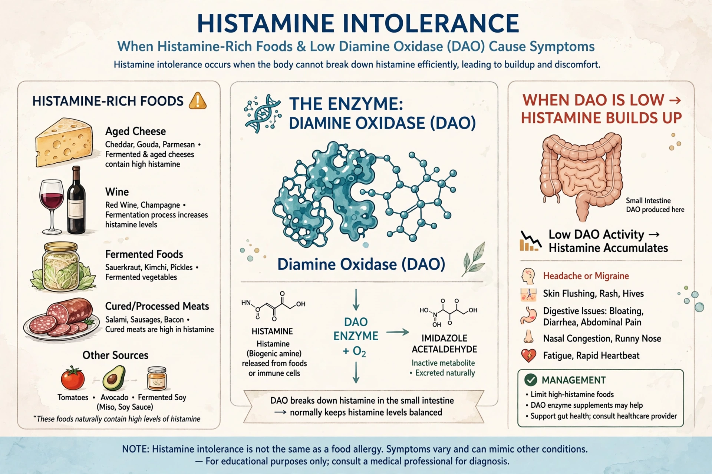

Histamine intolerance is a proposed condition in which ingested histamine, mainly from food, is inadequately broken down — usually attributed to reduced activity of the enzyme diamine oxidase (DAO) — leading to symptoms resembling allergy. Its existence and diagnostic criteria remain debated in the medical literature.

Histamine intoleranceReported symptoms include flushing, headache, urticaria, itching, nasal congestion, abdominal pain and diarrhoea after histamine-rich foods such as aged cheese, cured meats, fermented foods and wine. Unlike true allergy, the mechanism is not mediated by immunoglobulin E, though severe reactions can mimic anaphylaxis.
There is no validated test; DAO blood levels are unreliable. Diagnosis is usually by exclusion of allergy, mast cell disorders and other causes, sometimes with a trial of a low-histamine diet or DAO supplements, whose evidence is limited.